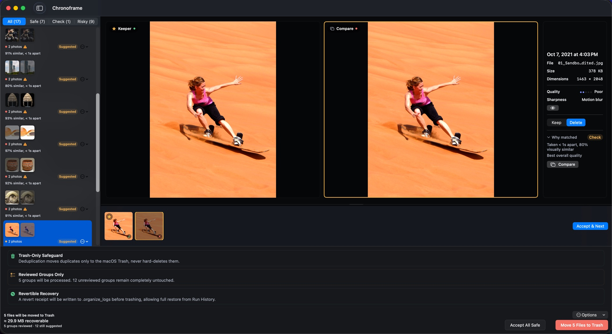

You’ll need a Mac running macOS 14 or later and a folder of photos and videos to scan. Deduplicate works on files in a folder you can write to, such as your organized library or an external drive.
1. Choose a folder and scan
Open Deduplicate, use Choose Folder… and select Start Scan. Start with one folder you know well. Scanning doesn’t change your photos or videos, and you can scan as often as you like.
2. Pick how thorough to be
Under Detection, Balanced is the default and suits most libraries. Exact copies is the most conservative: identical videos and only the closest photo matches. Similar shots casts a wider net, so expect more groups to check. Identical files are matched by their contents, not their names. Similar-video matching is an optional setting, off by default, and works with Balanced or Similar shots.
3. Review each group
Each group shows the keeper beside its copies, with size and dimensions (plus sharpness for photos) to break ties, and a Why matched note. Choose Keep or Delete for each file. High-confidence groups come with a suggestion you can take with Accept Suggestion or Accept All Safe; weaker matches and similar videos start with nothing marked for deletion. RAW + JPEG and Live Photo pairs are kept or removed together.
4. Move approved files to Trash
Choose Move to Trash. Only groups you have reviewed are affected; unreviewed groups stay untouched, even if they carry a suggestion. Chronoframe re-checks each file’s contents before moving it, and sends it to the macOS Trash, never a permanent delete.
5. Restore from History if needed
Every run writes a receipt. Open Organize → History, choose the run, then Revert This Run… and Restore. Files come back as long as they are still in Trash with the same contents, and restored files no longer count against your free allowance.
What this doesn’t do
Deduplicate works on files in folders and skips the Apple Photos library; it never deletes from Photos. Moving files to Trash doesn’t free their space until you empty it, and once Trash is emptied, Chronoframe can no longer restore them. Re-saved or re-compressed copies aren’t identical files, so they are found only by look-alike matching, which is more likely with Balanced or Similar shots and always waits for your review.
What Chronoframe does, in plain terms
- Exact duplicate matching by content for photos and videos, plus similar-photo review and opt-in similar-video review.
- Side-by-side review of every group; files move to Trash only after you approve them.
- Restore from History while files are still in Trash.
- Preview-first organization into dated folders, with source originals untouched.
- No uploads, no Chronoframe account, no subscription. Processing happens on your Mac, on macOS 14 or later.
- Free allowance: 500 files organized plus 100 duplicates moved to Trash, per Apple Account per Mac. Scanning and review stay free.
- $14.99 once for the lifetime unlock, with Family Sharing included.
How Chronoframe protects your files →
Organize · Export from Photos · Find duplicates — all in Chronoframe for Mac: Organize photos into dated folders · Export Apple Photos originals · Find duplicate photos · Compare the alternatives